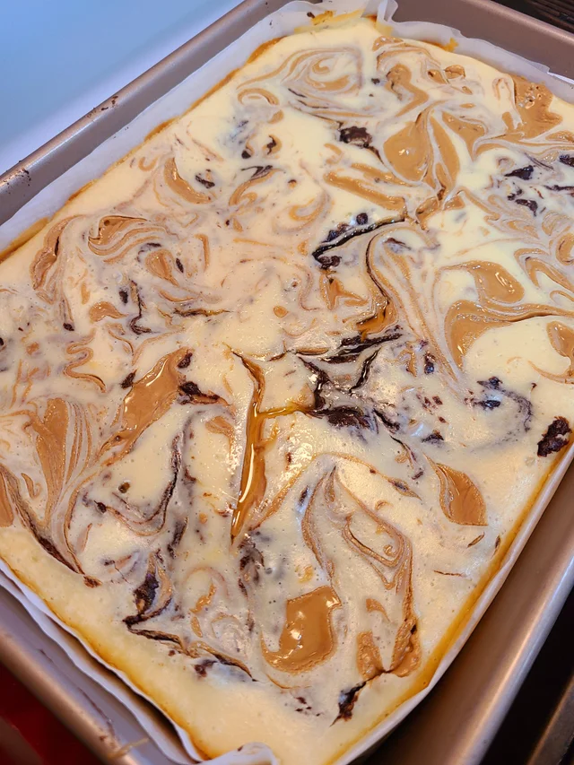

Marble Peanut Butter Cheesecake Brownies

Ingredients:
- 1 cup unsalted butter
- 1 1/3 cups semi sweet chocolate chips
- 3/4 cup cocoa powder
- 1 1/2 cup sugar
- 1 cup brown sugar
- 4 eggs (room temperature)
- 1 egg yolk
- 1 tbsp coffee
- 2 tbsp vanilla extract
- 1 cup all-purpose flour
- 2 tsp salt
- 1 tbsp water
- 16 oz cream cheese
Steps:
For Brownies:
- Add the melted butter and one cup of chocolate chips to a large bowl. Microwave on short bursts at low power until mostly melted then stir together until smooth
- Immediately dump in the cocoa powder and salt then mix until fully incorporated
- Mix in the white and brown sugars then add eggs and yolk, vanilla and coffee then mix until smooth
- Drop in the flour and mix until almost combined then fold in the remaining chocolate chips
For Cheesecake Topping:
- Add the room temperature cream cheese to stand mixer fitted with a whisk attachment and mix at medium speed for 3-4 minutes
- Reduce speed to low and slowly add sugar, then salt and vanilla
- Add eggs one at a time, allowing each to incorporate before adding the next. Scrape the bowl down and mix once more
- Add the cheesecake mixture to the brownie base and spread out
- Add chocolate-cheesecake spread with a skewer
- Bake at 350F for 10 minutes then reduce oven temperature to 325F and bake another 35 minutes